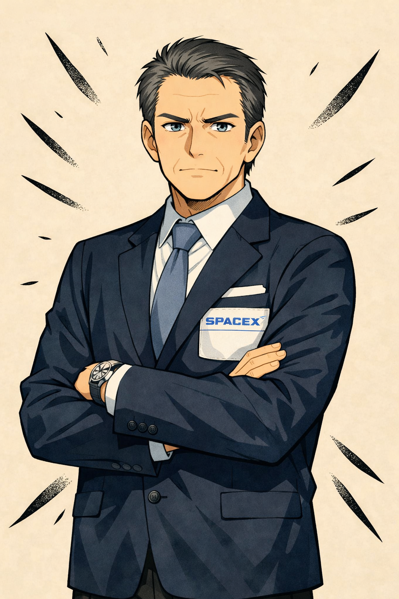
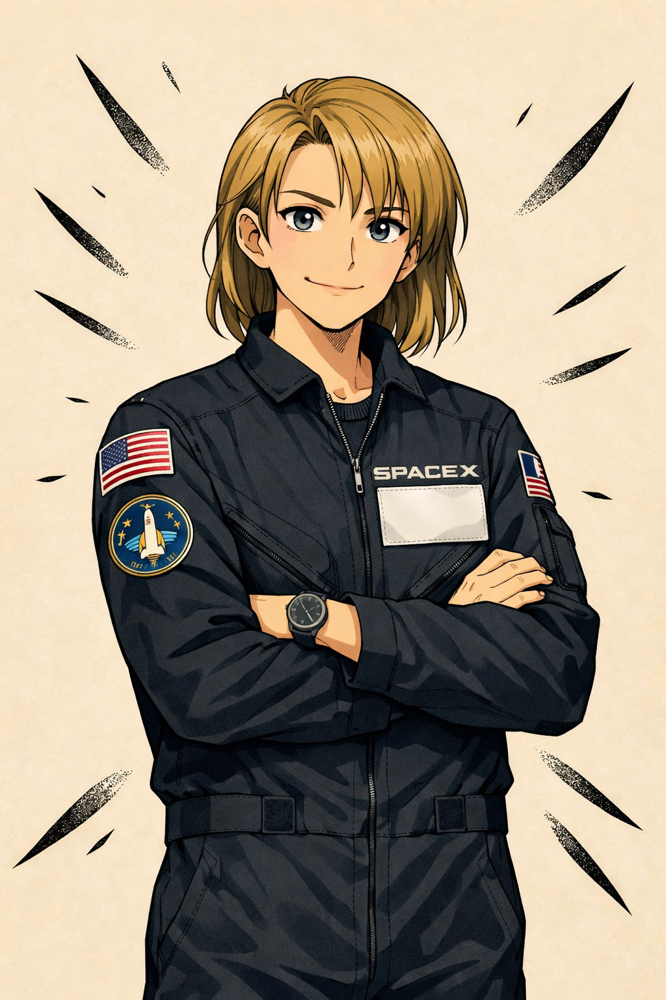
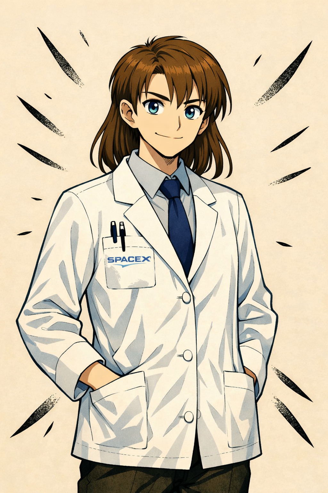
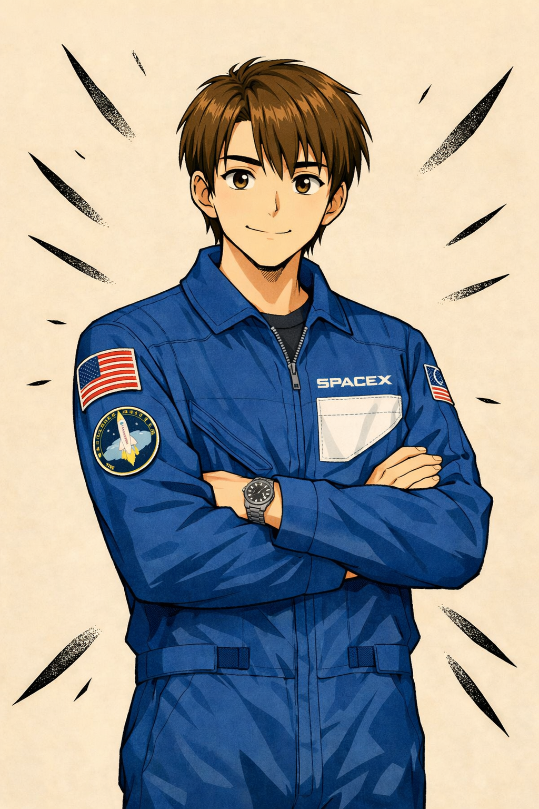
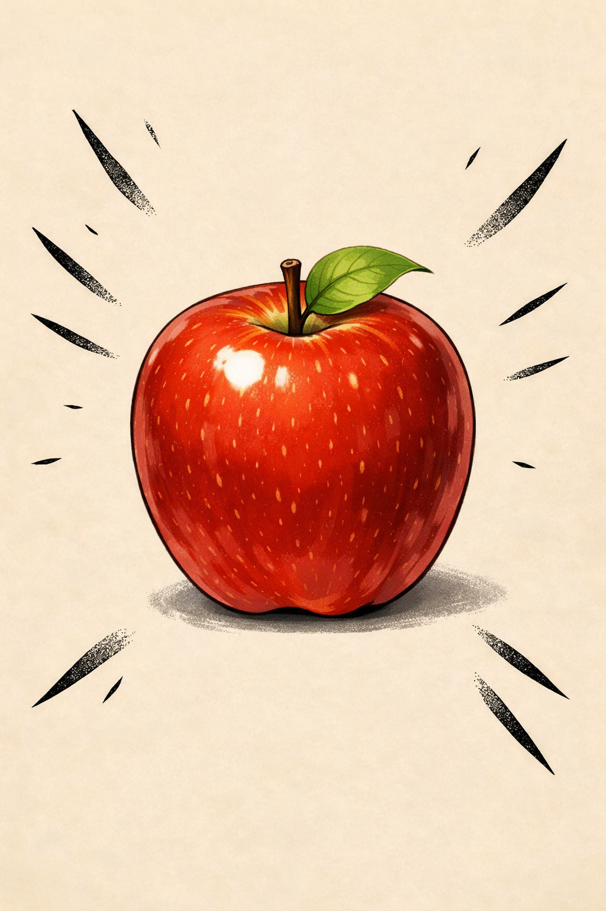

Cieasmo Noght
Appointed by SpaceX, the squad’s mission into astrodynamics spirals into absurdity when Santa appears aboard the ISS. The mission to clear clogged toilet in Orion and continue towards Mars fails terribly when Santa comes up with his "brilliant poetry" to be forcefully broadcasted through satellites. Disruption of satellites, orbital battles to a crash back on Earth, the pandemonium spreads to the next part of Cieasmo. …
Characters in the series:
Yuri

Mission Director
Helena

Trajectory and Propulsion Engineer
Clara

Life support specialist
Xihao

Mission Integration Lead
Apple

AI-Based smart speaker
Chapters
Introducing
Mission Possible
Hidden Betrayal
Clamping Up
Apple Protocol
Orion Here
Toilet Repair
Foolish Mistake
ISS Rendezvous
Steady Talks
Poetry Brilliance I
The Unpoetry
Poetry Brilliance II
Sense Derivation
Poetry Brilliance III
Peace Failure
Cn 0 – Introducing
Hey jingle bells jingle bells jingle all the way, Santa has appeared in, The ISS. Hey jingle bells jingle bells jingle all the way, The mission has occurred To kick fly to space! Going through the satellites, With the SpaceX, Search the target, And the big clashes. Hey jingle bells jingle bells jingle all the way, Here the series comes, To kick, clash, fight, crash the face. Also go there to here Crash on earth!
Cn 1 – Mission Possible
The CERN crash had left scars deeper than the shattered lab walls. Physics still circles around the squad’s names. They found themselves in a sleek SpaceX conference room. Screens glowed with telemetry shared by NASA from Orion, the Artemis II spacecraft looping Earth on its free‑return trajectory 🌍🚀. The vibe was tense, four officials stood ready: Helena, Yuri, Clara, Xihao. Yuri: Your squad was noticed after CERN. You’ve got some exposure. Artemis II has reported a malfunction in Orion’s waste system. Hygiene and health are at risk. You will rendezvous in Earth orbit and stabilize the system. Charlie: Bruh… we’re fixing toilets now? 🚽💀 Clara: In microgravity, fluids don’t fall. Waste systems rely on suction pumps and airflow. Orion’s urine processor is clogging — similar failures have happened on the ISS. If contamination spreads, crew health collapses fast. Ben: So basically… we’re space plumbers. 🔧✨ Diamonde: Better than being crash‑test dummies, ngl. 🤷 Helena: Orion is on a free‑return path — Earth orbit, lunar flyby, then back. We’ll align you to intercept before it leaves Earth’s sphere. Precision is everything. Miss the window, and you drift. 🥲 Monica: Okay but like… if we pull this off, what’s next? 👀 Yuri: Up next you’ll head on to Mars. Ben: And that is for…? 🤨 Xihao: We’ll let you know that later once phase 1 is complete. ✌🏻 Yuri: NASA goes Moon. SpaceX goes Mars. Once you stabilize Orion, you’ll continue onward. This mission is demonstration — proof that SpaceX can reach further. 😏 Monica: Why just us? Why such secrecy? Where’s the whole SpaceX team? Yuri: Shhh… 🤫 NASA had requested to offer some help, also ordered to strictly not inform anyone regarding the tie. Xihao: You’re lucky Mr. Yuri found you as the most reliable specimen to continue to Mars… Monica: Did you say specimen? 🤨 Yuri: No my dear, he said space men. 😢 Monica: I’m a woman btw. Diamonde: Yeah…. The squad exchanged glances 👀. Monica scribbled notes like she was prepping for finals 📚, Ben muttered about tools🔧, Charlie studied the orbital paths with sweaty focus 😤, Paraoh stayed still like a statue 🗿, and Diamonde smirked at the absurdity of space plumbers. Yuri: Worry not… Xihao will be coming with you on the lead. In case of any doubts, do ask him. Xihao: Yeah, I’m always there. All the best guys. 😁 Helena: I’ve meticulously designed your trajectory towards Orion, so no worries. Ben: But hey, you think we’ll reach there within the limit? 🤨 Xihao: Why not guys, when engineer like Ms. Helena we have… 🙂↕️ Gear checks followed. Suits were laid out, instructions repeated. The officials stayed on Earth — mission control vibes, watching from HQ 🖥️. Monica, Ben, Charlie, Diamonde, Paraoh, Xihao walk to the spacecraft, engines humming…🔥
Cn 2 – Hidden Betrayal
The countdown had begun ⏳. The squad sat strapped in, helmets sealed, hearts racing. 🚀💫 But then, a sudden shift. Xihao’s comm crackled. Xihao: Squad, change of plan. I won’t be joining you onboard. I’ll stay in HQ to guide you directly. Sorry. 😢 Monica: Bro, you’re ditching us at T minus 10? 💀 Xihao: Not ditching. There’s a genuine problem. Paraoh: What kinda problem’s making you ghost us? Xihao: I’d rather not say. 😠 Yuri: Oh Xihao, please get off the spacecraft. Anyways, give them the device. Xihao: Sure. Btw, I’ll stay at the HQ, available for your support. Just connect to me anytime. 😁 Monica: Okay? Xihao hands over an apple 🍎 to Ben. Ben: Um. 😐 Diamonde: Show me. Awww. ☺️ so nice, we were hungry. Diamonde tries to eat the apple. 😋 Apple: Aaah! Please stop! 🛑 Xihao exclaims and stops Diamonde from biting Apple. Xihao: No no no! Stop my dear. It’s not supposed to be eaten… 😮💨 Paraoh: Woah, it talks… Xihao: listen, that is an AI powered device which will help you through your mission. It’s developed by SpaceX in secrecy and shouldn’t be disclosed. Charlie: Okay… how do we even use it? 🔎 Xihao: The name is “Apple”. Just call it and it’ll respond. 🍎 Ben: So… Siri’s cousin? 🤨 Charlie: Is it powered by “Apple Intelligence”? 😂 Monica: Oh yes, I’ve heard the crew on Orion brought “Apple Intelligence“ powered iPhones to get pics. 📲📸 Xihao: Enough jokes. Apple is mission‑critical. Treat it like crew. Ben: Hey Apple 🍎 what’s the weather today? ⛅️ Apple: Current weather at Kennedy Space Center is roughly 54°F with 91% humidity and light 3 mph SW winds. Tonight expecting partly cloudy skies and lows near 50°F. 🤖 Paraoh: Nice. 👍🏻 The device was secured in the cabin — sleek, glowing, humming with quiet intelligence. The squad stared at it, half skeptical, half curious. 👀✨ Few minutes later in the HQ… 🏢 The SpaceX officials debated in conference room. 🗣️ Yuri: Well done Xihao, you left them at right time. 😉 Xihao: Thanks Sir, by the way, you think they'll coordinate once we reveal the real motive?🤡 Yuri: One, when goes to Mars, never comes back... Why worry so much? 😈I've ordered five Optimus robots to be crafted exactly as the squad. We'll need 'em to present to the media that we've brought them back... 🙄📹 Clara: Sir, I don't think you should be doing this. 😟Why such sin of sending innocent guys to Mars and let them die?⚰️ Yuri: Clara, you need not look into this, focus on your job. 😡I'll see you once the mission is complete. You dare open your mouth... Helena takes Clara out of the room and calms her. Helena: Here Clara, look my dear. 🥺If we indulge in such matter, we'll destroy ourselves. Let's go to control room. 😇
Cn 3 – Clamping Up
The cabin rattled like an old bus on a broken road 🚌. The Crew Dragon 2 got everyone pressing back into their seats. They moved farther and farther from the blue-green marble 🌎. Apple glowed in the corner, breathing like it was alive 🍎✨. Apple: Trajectory stable. Maintain orientation. 🤖 Charlie groaned. Charlie: Bro, this feels like a rollercoaster with no tracks. 💀🎢 Paraoh: Be quiet and hold it firm. Several minutes later, the Crew Dragon 2 reached the orbit. Silence took over. Stars were seen from window 🌌. The squad floated, nervous but amazed. Orion was out there, waiting like a ghost ship 👻🚀. Helena's voice came through the comms.📢🎙️ Helena: You’re close now. Apple will guide you in. Don’t mess this up. Ben fiddled with his straps. Ben: So we’re trusting a glowing fruit to park us in space. 🍎 Diamonde: Better than trusting Charlie. 😂 Charlie: Bruh, I’d park us fine. Just… maybe upside down. 🥲 Paraoh leaned back, grinning. Paraoh: Dock or drift, huh? Sounds like a reel challenge. 🕺📱 Charlie: Bro, you’re not serious at all. Paraoh: Why be serious when we’re literally floating in space? 🌌🤣 The cabin went quiet again. Thrusters hissed, the spacecraft sliding forward. Apple pulsed brighter, giving calm instructions. Apple: Relative velocity stable. Approach in progress. Contact in 30 seconds. The squad held their breath. Orion came closer. The silence was thick, broken only by the hiss of thrusters and Charlie’s nervous laugh. Charlie: Bruh… this is like parking a car blindfolded. 🥲🚗 Monica: Shut up and hold steady. The spacecraft came closer. The docking ring lined up. Everyone stared at the window, waiting. Then — CLUNK. The clamps locked. Orion was theirs. 🚀🔒 Relief hit them all at once. Charlie laughed nervously 😂, Diamonde smirked 😏, Monica scribbled notes 📝, Paraoh started humming a random tune 🎶, and Ben just stared at Apple. Ben: Okay… not bad, Apple. Not bad. Apple: Docking successful. Mission continues.🤖 Diamode stretched out, floating upside down. Diamonde: So… who’s up for a space selfie? 📸👽 Paraoh: Sis, we almost panicked docking and you want a selfie? Charlie: Exactly. That’s the vibe. 😎✨
Cn 4 – Apple Protocol
The cabin was calm after docking. Orion floated outside like a giant shadow 👻🚀. Inside, the squad was restless. The silence was heavy, broken only by the hum of systems. Apple glowed brighter, pulsing like it was waiting for someone to talk. 🍎💡 Charlie: So… do we just sit here staring at a glowing fruit? 💀 Apple: Better than staring at your face, Charlie. 🤖😂 Diamonde: OHHH roasted by a fruit! 🔥🍎 Charlie: Bruh… even the tech is clowning me. 🥲 Ben leaned forward, curious. Ben: Apple, what’s our oxygen level? 🔧 Apple: Oxygen stable at 98%. Safe for 72 hours. Unlike Charlie’s patience, which is at 2%. 🤖🌬️ Charlie: Bro, why me again?! 💀 Monica: You’re pretty cute 🥰 Paraoh: Because you’re the comic relief, duh. 🌌🤣 Monica: Apple, what’s our distance to Orion hatch? 👀 Apple: 12 meters. Approach in 2 minutes. And Monica, your heartbeat is calmest. You’re the squad’s anchor. 🤖❤️ Monica: …Okay, that’s actually sweet. ☺️ Diamonde: Apple’s picking favorites already. 😂 Paraoh (spinning upside down): Apple, rate my vibe. 🕺 Apple: Chaotic. But chaos is energy. Energy keeps missions alive. 🤖⚡ Paraoh: Bro, even the fruit knows I’m vibing. 😎✨ Charlie: Nah, it just politely said you’re annoying. 💀 Ben fiddled with his straps. Ben: Apple, calculate docking stress. Apple: Docking stress minimal. Hull integrity at 99.7%. Unlike your math grades, Ben. 🤖📊 Ben: Bruh, roasted by science. 🥲 Diamonde: Apple’s got bars. 😂 The squad stared, floating in zero‑G. Apple pulsed brighter, almost proud. Apple: You are strong. You are capable. Together, you will succeed. 🤖🌟 Charlie: Bro, did we just get therapy from a fruit? 💀 Diamonde: Don’t call it fruit. It’s a crew member. Paraoh: Space therapy. Sponsored by Apple. 🍎🤣 Diamonde: Apple, can you sing? 🎶 Apple: I cannot sing. But I can hum frequencies. 🤖🎵 Apple emitted a soft hum, like a lullaby in static. The squad froze, then burst out laughing. Paraoh: Bro, it’s literally humming like a fridge. 💀😂 Monica: Still better than your singing. 👀 Paraoh: …fair. 🥲 Paraoh: Space selfie with Apple, let’s gooo! 📸👽 Apple: Smiles are good. Smiles reduce stress. Take your selfie. 🤖📸 Charlie: Bro, we almost panicked docking and you want a selfie? Paraoh: Exactly. That’s the vibe. 🌌🤣 Apple: Confirmed. Paraoh’s vibe is unserious but effective. 🤖😎 They floated together, snapping a goofy picture with Apple glowing in the background.
Cn 5 – Orion Here
The comms from Helena Helena: Team, you'll get into Orion. Mr. Goo’s the lead on board. He’s pretty sterner, stay disciplined. Ben: Ah fine. 😏 The hatch creaked open. The squad floated inside Orion, bumping in the cramped cabin. It was smaller than they imagined — like two minivans glued together 🚐🚐. (Omni to be specific) Inside, one man was waiting along with three others behind. Ben: 😅 Hello Mr. G-g-g-g-g Goo. Goo: Finally. You made it.😤 Charlie: Bruh, this place is tighter than my school bus. 🚌💀 Paraoh: Nah, it’s like a YouTube studio. Just missing the ring light. 📱🤣 Apple: Correction, Orion is a spacecraft, not a YouTube studio. But Paraoh’s vibe is consistent.🤖⚡ The squad smiled. Goo didn’t. He pointed at the control panel. Lights flickered orange. Goo: Enough jokes. Clara spoke from comms Clara: Life‑support glitch. CO₂ scrubbers failing. They’ve been holding it together, but it’s unstable.😟 Ben: So basically… we’re breathing spicy air. 🌬️🔥 Clara: Carbon dioxide levels rising. Squad must act within 90 minutes. Goo sighed. Goo: I’ll take my crew to your Crew Dragon. Safer there. You stay here, fix this mess. You must keep things in place. Monica: Wait, you’re leaving us in the haunted minivan? 👻🚐 Apple: Don’t you need space? You wanna be cramped? Paraoh: Perfect. More space for selfies. 📸👽 Apple: Focus. Mission requires repair, not selfies. Though smiles are still encouraged.📸 Goo floated toward the hatch, muttering. The rest of the members get in. Goo: Good luck. You’ll need it. He disappeared into the tunnel, leaving the squad alone in Orion. Silence filled the cabin. The orange lights blinked. The air felt heavier. Charlie: Bruh… this is like being left alone in detention. 🥲 Apple: Correction: This is survival, not detention. But Charlie’s stress level is elevated again.🤖❤️ Ben: Apple, can you guide us step by step? Apple: Yes. First, open panel 3B. Second, check filter alignment. Third, replace faulty cartridge.🤖🔧 Diamonde: Bro, it’s literally giving us IKEA instructions. 😂 Paraoh: Hope it doesn’t say insert screw A into slot B. We’ll be doomed. 🪛🤣 The squad floated to the panel. Tools clinked. Sweat formed. Apple’s glow pulsed brighter, steady and calm. Apple: You are capable. Together, you will succeed.🌟 For the first time, the squad believed it. Clara and Helena were listening from the HQ and felt relieved. 😌 Helena turned off comms 🎙️ Helena: Look, at least there’s someone good there. 🥹They’ll be fine. Clara: I hope so. But we gotta tell the truth before they head on to Mars. Helena: Yeah, let’s see… But can they really head on to Mars? 😏
Cn 6 – Toilet Repair
Fan was broken, airflow gone, Waste lines jammed, the fault light on. Squad repaired with tools that sway, And Apple mode was on the way. Hey jingle bells jingle bells jingle all the way, Urine flow restored with care, Solid waste contained with air. Hey jingle bells jingle bells jingle all the way, Filters sealed, the cabin clean, Orion’s toilet back on the scene. Squad repaired the UWMS, Mission continues on the way, But heavy mistake leads the sway…
Cn 7 – Foolish Mistakes
The repair at Orion was a success 🚽✅, rather chaos was seen at the HQ, the control room. 🏢💻 Xihao: So, we move on to Mars? 🪐 Yuri: Yeah sure… Amazing, now that phase one is complete. 😏🚀 Helena walks in the room 🚶♀️ Helena: But can they? 🤔 Yuri: WDYM? 😳 Helena: Xihao, can they? Did we send maybe, wrong spacecraft? 🛑🚀 Yuri: Oh dear! Aaaaaaaaahhh! What have we done?! 😱💥 Yuri throws a glass at Xihao’s face. 🥂💢 Yuri: Who stupidly sent the Crew Dragon 2 for a Mars mission?! 🛰️➡️🪐 Xihao: Sir, I’m extremely sorry I couldn’t appoint any Starship…. 🙇♂️ Yuri interrupts Yuri: Shut up! 😡 (Looks at Helena) Helena, even you? You… Helena interrupts Helena: Sir, before blaming on anyone, firstly you should be aware that Starship is still experimental 🧪🚀. Secondly, since you’re the director you should know which spacecraft’s appropriate. 📝 Clara: Valid point. 👍 Xihao: Yes? Sir? 😰 Helena: Sir? 😟 Clara: Sir? 😐 Xihao: Sir? 😨 Helena: Yes speak sir? 😬 Yuri pulls out a revolver pistol 🔫 and points at the staff. 😳 Helena, Clara, Xihao stiffen, anxious. 😨😰😱 Yuri shoots a bullet at Xihao 💥 and he shatters into pieces immediately. 💀🤖 Clara and Helena stare stunned 😧😲 Yuri: Mr. Elon handed over 2.3 million dollars 💵 in advance for completing the mission. And demanded 9.8 million dollars for failure. All because of you! I’m in debt! 📉💸 Helena: Soooo sweet. (Sarcastically) 🙄🍬 Clara: So you were gonna eat that money alone? Wanna have diabetes? 🍭😂 Helena: Nope. He can’t eat that money. He already has diabetes. Yuri: Shut up! 😡 I must resign and run away. 🏃♂️💼 I’ll take revenge soon! 🔥 Yuri hastily takes his bag 🎒, takes out few papers 📄 and ignites them 🔥, scattering in all directions. Yuri picks up his belongings 👜 and runs out the office. 🏃♂️💨 Helena: Great, what about you Xihao? 🤷♀️ ⚰️
Cn 8 – ISS Rendezvous
COMING...
Cn 9 – Steady Talks
COMING...
Cn 10 – Poetry Brilliance I
COMING...
Cn 10.5 – The Unpoetry
COMING...
Cn 11 – Poetry Brilliance II
COMING...
Cn 11.5 – Sense Derivation
COMING...
Cn 12 – Poetry Brilliance III
COMING...
Cn 13 – Peace Failure
COMING...